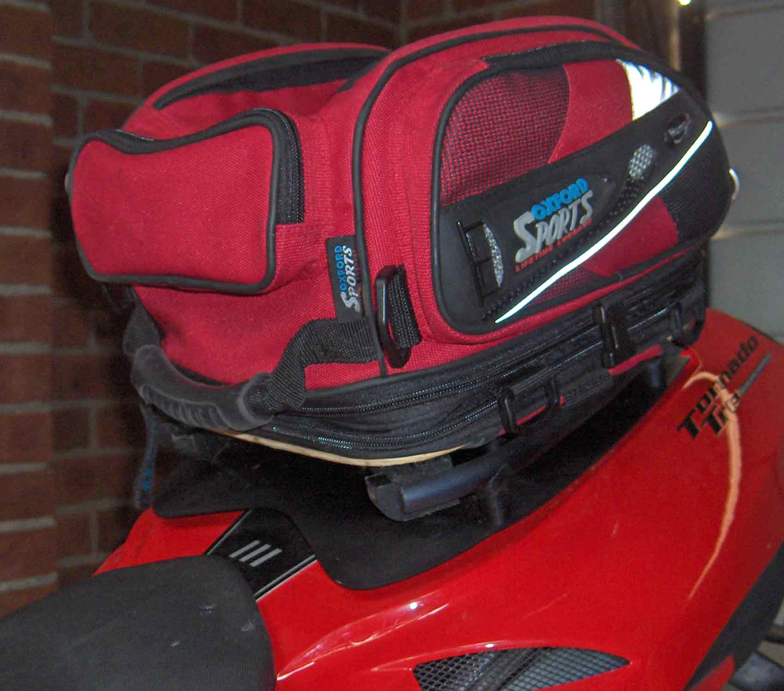
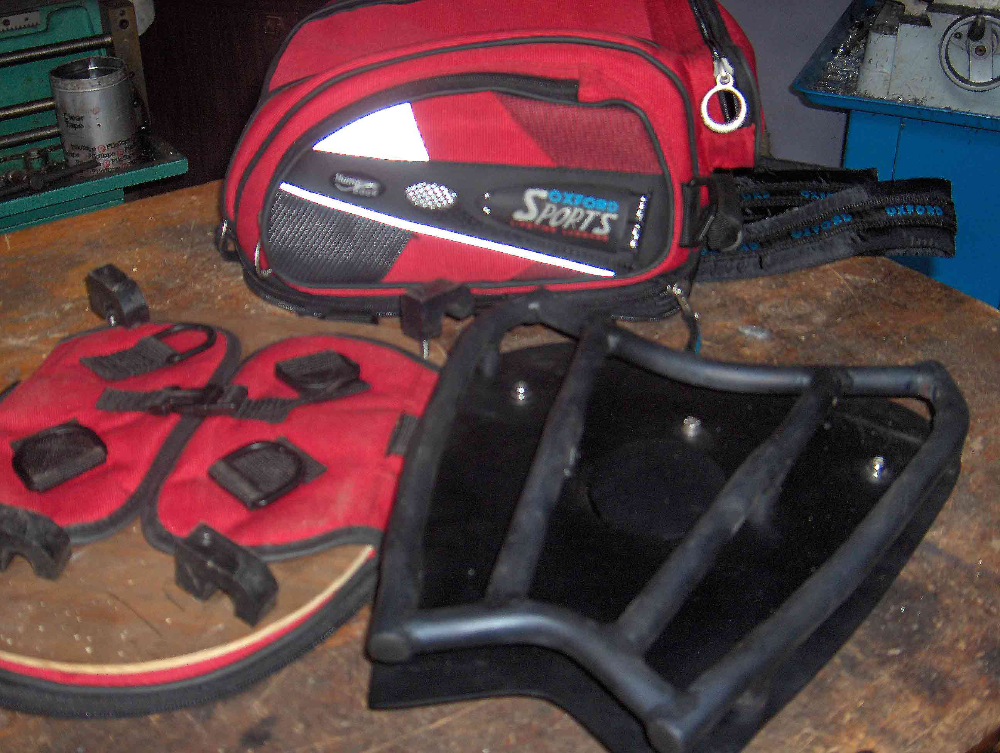
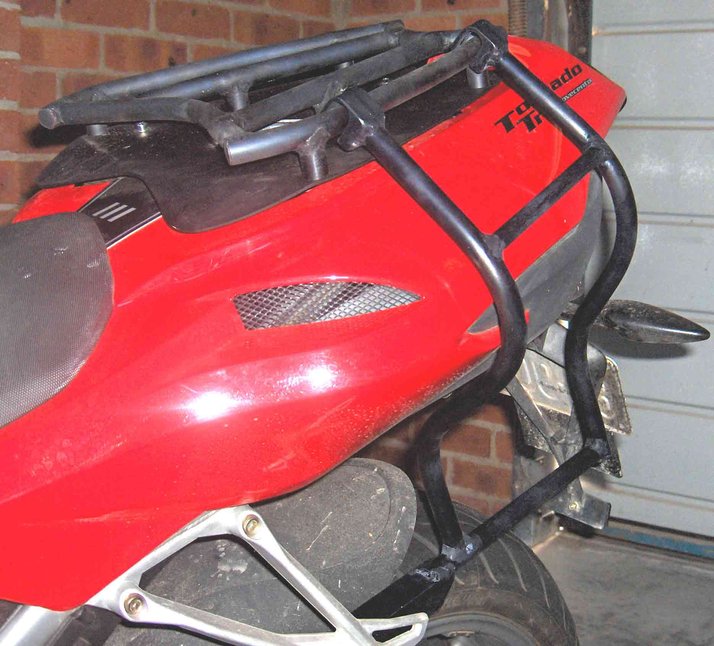
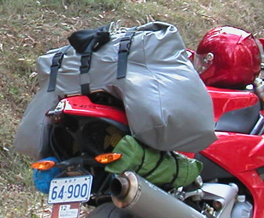
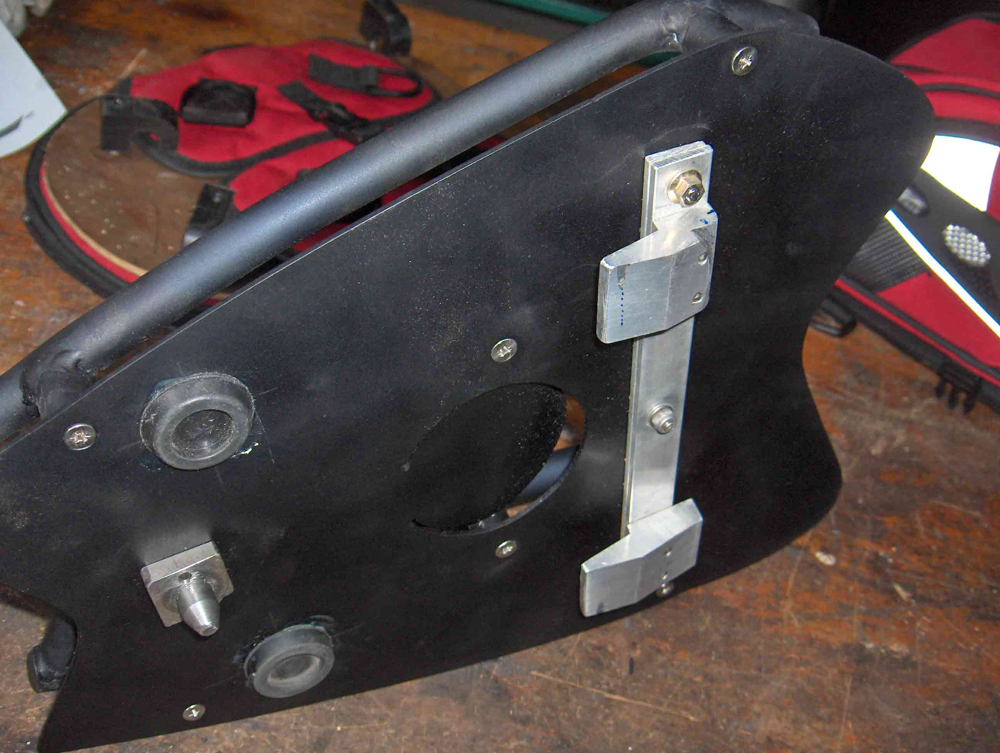

(The first rack developed in 2005)
Day / Weekend Touring
(This function is now better served with the Carbon Fibre Rack & Accessories)
_ 
On the left is the day pack mounted on the bike. On the right are the 3 main parts.
The luggage is a standard Oxford tail pack, with the ocky straps removed, and a couple of
plywood stiffeners added. 4 plastic clips fix the pack to the base, screwed through the
plywood.
Extended Touring
_ 
To go touring for a week, a rack is fixed to each side of the base. This gives strap points
for the tent and air-bed. The side racks also serve to keep a purpose built pack from rubbing
on the tail. Each is fixed at 3 points. 2 on the base rail, and one inside the pillion footpeg
support. The right footpeg support is already used to fix the pipe. The bolt was replaced with
a longer one, to accommodate the rack. The inside of the left pillion peg support, was drilled
and tapped M8, to provide the bottom fixing point for the left rack.
The picture on the right was taken on the way back from the Superbikes at
Philip Island. The grey purpose built pack, clips on to the front of the base, so that it can
not slip into my back. 2 plastic pins hold it in position at the back. One strap ties it to
the base. It is sealed by folding the opening back onto itself several times. The 2 outside
straps help to keep the pack closed.
The tent is ocky strapped to the frame on the left, the air bed on the right, just above the
pipe.

The base is the main part, shown here from below. The rear seat is removed, and the base
mounts to the frame using the same attachment points - 2 clips near the battery, and one latch
near the tail. It is removed in the same manner as the seat, although, being aluminium, it's
far more rigid.
The rack on the base is 12mm aluminium tube, shaped similarly to the seat. 6 bosses are used
to screw the rack to the base plate, which is 2mm aluminium sheet, bent slightly near the front,
to follow the contour of the tail. The plate had to be releaved a little to miss the radiator
cap, which is not accessable through the plate - although it probably should be.